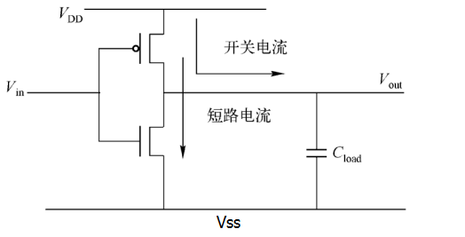
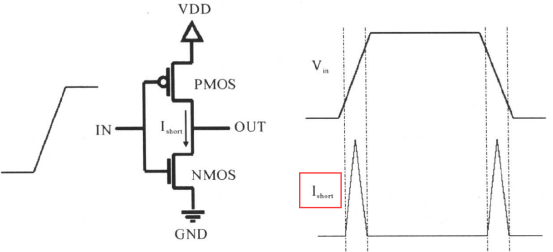
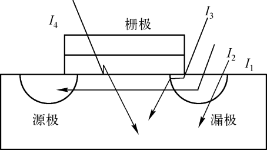

Keywords: switching power, internal power, static power
Power consumption impact
Portability
The lower the power consumption, the longer the electronic product can work with the same amount of battery, and the difficulty of designing battery capacity and volume for portable devices is also reduced. For example, mobile phones are getting thinner and thinner without affecting performance, precisely because low-power design plays a crucial role.
Performance
The greater the power consumption, the more energy is consumed, the more heat is generated, and the working performance of various components will be affected. For example, when a mobile phone is used for a long time, it may feel hot, and various application software may also lag.
Cost
Without considering low-power design, the implementation of a function may be more cumbersome, the number of components increases, and the product area increases; at the same time, when power consumption is too high, heat dissipation devices must be considered, which also increases assembly costs. In short, low-power design has many advantages and is also the development trend of future digital design.
Power consumption types
Power consumption types can generally be divided into dynamic power, static power, and surge power.
Dynamic power
Dynamic power mainly includes switching power (also called toggle power) and short-circuit power (also called internal power).
1. Switching power
In CMOS digital circuits, the power consumed when charging and discharging the load capacitor is the switching power. As shown in the following CMOS NOT gate:

When Vin = 0, the upper PMOS is turned on, and the lower NMOS is turned off; VDD charges the load capacitor Cload. After charging is completed, the level of Vout is high.
When Vin = 1, the upper PMOS is turned off, the lower NMOS is turned on, and the load capacitor discharges through the NMOS. After discharging is completed, the level of Vout is low.
Such a switching change, i.e., the charging and discharging of the power supply, forms the switching power. The calculation formula for switching power is as follows:

Where VDD is the supply voltage, Cload is the equivalent load capacitance of the subsequent stage circuit, and Tr is the toggle rate of the input signal.
2. Short-circuit power
Signal switching is not completed instantaneously. Therefore, during input signal switching, there is always a period when PMOS and NMOS are both conducting, so there is a path from the power supply VDD to ground VSS, forming a short-circuit current and generating short-circuit power. As shown in the following inverter circuit diagram:

The calculation formula for short-circuit power is as follows:

Where Vdd is the supply voltage, Tr is the toggle rate, and Q is the amount of charge flowing from the power supply to ground during one switching process.
Static power
In CMOS circuits, static power is mainly the power caused by leakage current, which is often related to the process.

The composition of leakage current mainly includes: PN junction reverse current I1, subthreshold leakage current I2 between source and drain, gate leakage current (including induced leakage current I3 between gate and drain), and tunnel leakage current I4 between gate and substrate.
Generally, leakage current mainly refers to gate leakage current and subthreshold current. For ultra-deep submicron processes, tunnel leakage current becomes one of the main currents.
- 1. When a reverse voltage is applied across the PN junction, the movement of holes in the P region and electrons in the N region is opposite, no current flows, and the diode is in a cut-off state. Some holes and electrons with higher energy will break free from the reverse electric field and form a weak drift current.
- 2. Gate leakage power: When a signal is applied to the gate (i.e., gate voltage), there is a capacitance between the gate and the substrate, so a current exists between the gate and the substrate, thereby generating power consumption.
- 3. Subthreshold current: When the gate voltage is lower than the turn-on threshold, leakage current from drain to source still occurs. This current is called subthreshold leakage current. In narrower transistors, when the drain and source are closer, subthreshold leakage current will occur. The narrower the transistor, the larger the leakage current. To reduce subthreshold current, high-threshold devices can be used, and the threshold voltage can be increased by substrate biasing. These are also considerations in low-power design.
- 4. Tunnel leakage current: This belongs to the field of quantum mechanics. Students who are interested can refer to it on their own.
The calculation formula for static power is as follows:

Surge power
Surge power is the power caused by surge current. Surge current refers to the maximum current flowing through a device when it is powered on or woken up, so surge current is also called startup current. Surge power is not the topic of this discussion.
Power consumption model
library information
The following is the first few lines of code description of a library process, containing parameters related to power consumption. The specific meanings are explained in the comments.
Example
/* library head: xxx */
technology (cmos) ;
simulation : true ;
nom_process : 1 ;
nom_temperature : -40; //default temperature
nom_voltage : 0.81; //default voltage
voltage_map(VDD, 0.81); //define multiple voltages in lib, including the following lines
voltage_map(TVDD, 0.81);
voltage_map(VDDDST, 0.81);
voltage_map(VDDGR, 0.81);
voltage_map(VDDSRC, 0.81);
voltage_map(VSS, 0);
operating_conditions("ssg0p81vm40c"){ //a corner definition
process : 1; /* SSGlobalCorner_LocalMC_MOS_MOSCAP-SSGlobalCorner_LocalMC_RES_BIP_DIO_DISRES */
temperature : -40;
voltage : 0.81;
tree_type : "balanced_tree";
}
default_operating_conditions : ssg0p81vm40c ;
capacitive_load_unit (1,pf) ; //define capacitance unit
voltage_unit : "1V" ; //define voltage unit
current_unit : "1mA" ; //define current unit
time_unit : "1ns" ; //define time unit
pulling_resistance_unit : "1kohm";
define_cell_area (pad_drivers,pad_driver_sites) ;
……
cell information
A library contains multiple basic functional units, declared with the keyword cell, and also contains various power consumption information.
Example
area : 0.392;
cell_footprint : "an2d1";
pg_pin (VDD) { //power pin
pg_type : primary_power;
voltage_name : VDD;
}
……
pin(A1) { //input signal pin
driver_waveform_fall : "tcbn22ullbwp7t40p140ssg0p81vm40c:fall";
driver_waveform_rise : "tcbn22ullbwp7t40p140ssg0p81vm40c:rise";
direction : input;
related_ground_pin : VSS; //input pin ground
related_power_pin : VDD; //input pin voltage
capacitance : 0.000418924 ; //input pin capacitance
……
}
pin(Z) {
direction : output;
power_down_function : "!VDD + VSS";
function : "(A1 A2)";
related_ground_pin : VSS; //output pin ground
related_power_pin : VDD; //output pin voltage
max_capacitance : 0.04182; //output pin maximum capacitance
min_capacitance : 0.00013; //output pin minimum capacitance
……
}
At this point, if the toggle rate is also known, the dynamic power can be calculated.
Toggle rate (Tr) refers to the number of signal (including clock, data, and other signals) toggles per unit time. As shown below, if the signal toggles 4 times in 40ns, the toggle rate is Tr = 4/40ns = 0.1GHz.

Internal power information
In the cell definition, internal power is defined as follows.
Example
related_pin : "A1" ;
related_pg_pin : VDD ;
rise_power(power_template_8x8) { //internal power lookup table
index_1("0.0026, 0.0101, 0.0252, 0.0553, 0.1155, 0.236, 0.4769, 0.9587");
index_2("0.00013, 0.00046, 0.00112, 0.00243, 0.00506, 0.01031, 0.02081, 0.04182");
values ( \
"0.000249215, 0.000254481, 0.000262354, 0.000261007, 0.00026381, 0.000277799, 0.000304295, 0.000345046", \
"0.000239751, 0.000248667, 0.000255454, 0.0002551, 0.000268563, 0.000275995, 0.000294669, 0.000336529", \
……
);
}
fall_power(power_template_8x8) { //internal power lookup table
index_1("0.0026, 0.0101, 0.0252, 0.0553, 0.1155, 0.236, 0.4769, 0.9587");
index_2("0.00013, 0.00046, 0.00112, 0.00243, 0.00506, 0.01031, 0.02081, 0.04182");
values ( \
"0.000577367, 0.000584652, 0.000589472, 0.000591623, 0.000592223, 0.000591943, 0.00059185, 0.000592132", \
"0.000563896, 0.000570743, 0.000576589, 0.000579818, 0.000580794, 0.00057962, 0.000579997, 0.000579136", \
"0.000550059, 0.000555794, 0.00056188, 0.000565568, 0.000567663, 0.000567231, 0.000567712, 0.00056745", \
……
);
}
}
The internal power of a cell is related to its transition time and output capacitance load. According to the input transition time and output capacitance, look up the table in the technology library to obtain the rising power and falling power, and then calculate according to the following formula to obtain the total internal power:

Static power information
In the cell definition, static power (leakage power) is defined as follows.
Example
value : 0.059561;
related_pg_pin : VDD;
}
leakage_power () {
value : 0.048082;
when : "!A1 !A2 !Z";
related_pg_pin : VDD;
}
leakage_power () {
value : 0.053318;
when : "!A1 A2 !Z";
related_pg_pin : VDD;
}
……
Static power is related to the state of the cell, that is, the power consumption will vary with different states of input and output signals. By looking up the table according to the state, the corresponding static power can be obtained. In actual power analysis, one does not manually look up relevant parameters to calculate power consumption, otherwise the workload would be too large to estimate. Often, power analysis tools are used to extract the power consumption information of these standard cell libraries for integrated calculation.